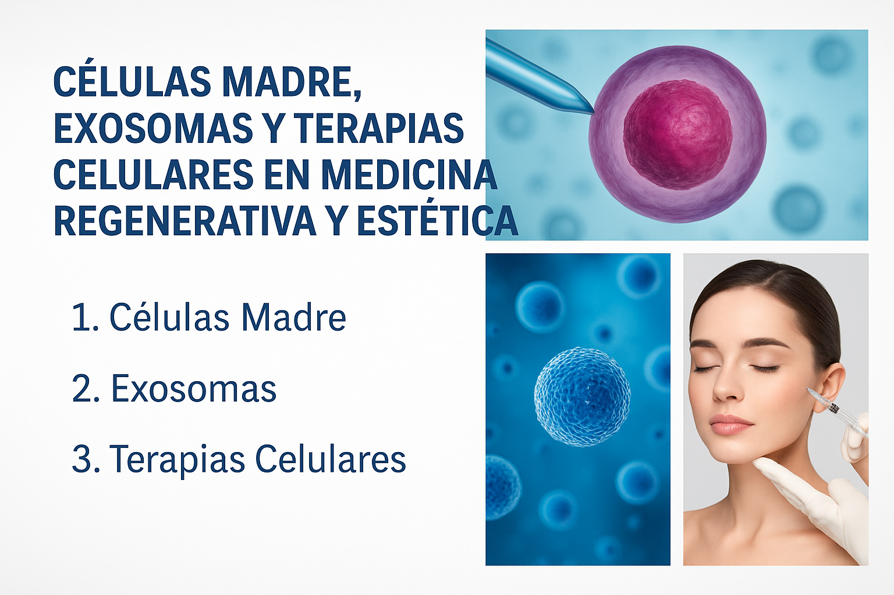

Por la Dra. Dulce María Soto Ayala
Las células madre son células especiales con la capacidad de convertirse en muchos tipos diferentes de células del cuerpo. Se utilizan para regenerar tejidos dañados, tratar enfermedades y mejorar la apariencia estética de la piel.
Los exosomas son pequeñas vesículas extracelulares que actúan como mensajeros entre las células. Transportan proteínas, lípidos y material genético. En medicina estética, se usan para estimular la regeneración celular, mejorar la elasticidad y luminosidad de la piel.
Las terapias celulares utilizan células vivas (como células madre o exosomas) para reparar o reemplazar tejidos. En estética, se aplican para rejuvenecer la piel, tratar cicatrices, alopecia y mejorar el aspecto general del rostro y cuerpo.